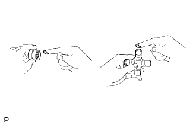
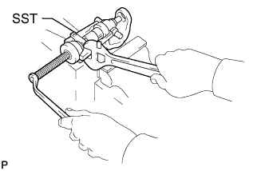
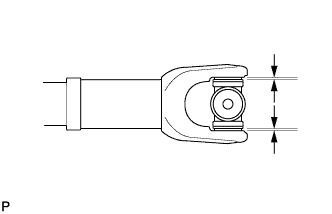
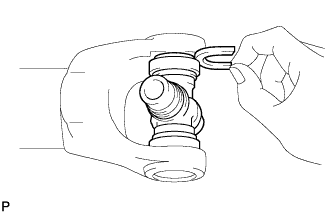
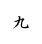
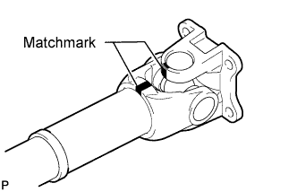
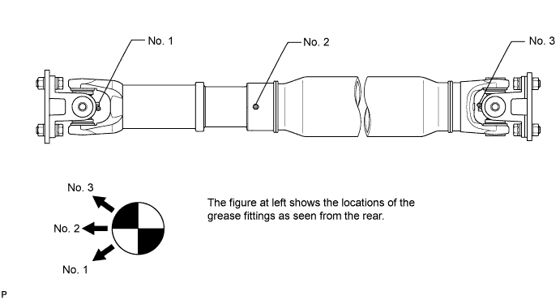
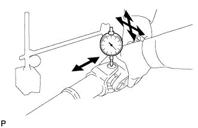

PROPELLER SHAFT ASSEMBLY > REASSEMBLY |
| 1. INSTALL REAR PROPELLER SHAFT UNIVERSAL JOINT SPIDER ASSEMBLY |
 |
Apply MP grease to a new spider and new bearings.
 |
Fit the spider into the flange yoke.
Using SST, install the bearings to the spider.
 |
Using SST, adjust both bearings so that the snap ring grooves are at maximum and equal in width.
 |
Install 2 new snap rings of equal thickness which will allow 0 mm (0 in.) of axial play.
| Color | Mark | Specified Condition |
| - | J | 2.18 to 2.20 mm (0.0858 to 0.0866 in.) |
| - | K | 2.20 to 2.22 mm (0.0866 to 0.0874 in.) |
| - | F | 2.22 to 2.24 mm (0.0874 to 0.0882 in.) |
| - | G | 2.24 to 2.26 mm (0.0882 to 0.0890 in.) |
| - | H | 2.26 to 2.28 mm (0.0890 to 0.0898 in.) |
| - | 1 | 2.28 to 2.30 mm (0.0898 to 0.0906 in.) |
| - | 2 | 2.30 to 2.32 mm (0.0906 to 0.0913 in.) |
| - | - | 2.32 to 2.34 mm (0.0913 to 0.0921 in.) |
| Brown | - | 2.34 to 2.36 mm (0.0921 to 0.0929 in.) |
| Blue | - | 2.36 to 2.38 mm (0.0929 to 0.0937 in.) |
| - | 6 | 2.38 to 2.40 mm (0.0937 to 0.0945 in.) |
| - | 7 | 2.40 to 2.42 mm (0.0945 to 0.0953 in.) |
| - | 8 | 2.42 to 2.44 mm (0.0953 to 0.0961 in.) |
| - |  | 2.44 to 2.46 mm (0.0961 to 0.0969 in.) |
| - | 10 | 2.46 to 2.48 mm (0.0969 to 0.0976 in.) |
| - | A | 2.48 to 2.50 mm (0.0976 to 0.0984 in.) |
| - | B | 2.50 to 2.52 mm (0.0984 to 0.0992 in.) |
| - | C | 2.52 to 2.54 mm (0.0992 to 0.1000 in.) |
| - | D | 2.54 to 2.56 mm (0.1000 to 0.1008 in.) |
| - | E | 2.56 to 2.58 mm (0.1008 to 0.1016 in.) |
Using a hammer, tap the yoke until there is no clearance between the bearing outer race and snap ring.
 |
Align the matchmarks on the propeller shaft and flange yoke or flange yoke and sleeve yoke.
Install the flange yoke to the sleeve yoke or propeller shaft.
| 2. INSPECT PROPELLER SHAFT GREASE FITTING DIRECTION |

| 3. INSPECT SPIDER BEARING |
 |
Check the spider bearings for wear or damage.
Check the axial play of each spider bearing by turning the yoke while holding the shaft tightly.